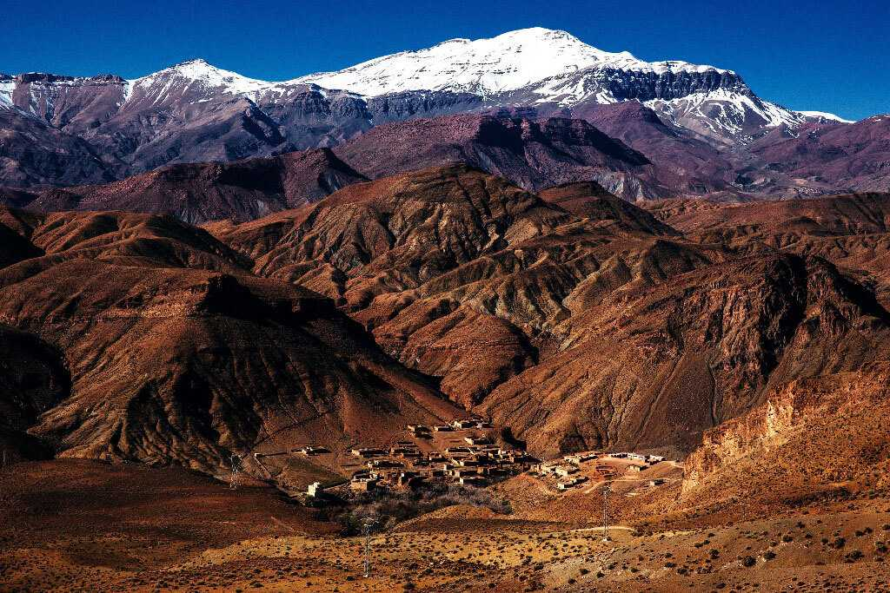

Альпы
Кордильеры
Атлас
Гималаи
Европа
Альпы - самый высокий и протяжённый горный хребет среди систем, целиком лежащих в Европе.
Самой высокой вершиной Альп является гора Монблан высотой 4810 метров над уровнем моря, расположенная на границе Франции и Италии. Всего в Альпах сосредоточено около 100 вершин-четырёхтысячников.
Самой высокой вершиной Альп является гора Монблан высотой 4810 метров над уровнем моря, расположенная на границе Франции и Италии. Всего в Альпах сосредоточено около 100 вершин-четырёхтысячников.

Северная и Южная Америка
Кордильеры — величайшая по протяжённости горная система земного шара, простирающаяся вдоль западных окраин Северной и Южной Америки, от Аляски до Огненной Земли.
Вся система Кордильер делится на две части — Кордильеры Северной Америки и Кордильеры Южной Америки, чаще именуемые Андами.
Наиболее высокие вершины: в Северной Америке — гора Денали (Мак-Кинли; 6190 м), в Южной Америке — гора Аконкагуа (6961 м).
Вся система Кордильер делится на две части — Кордильеры Северной Америки и Кордильеры Южной Америки, чаще именуемые Андами.
Наиболее высокие вершины: в Северной Америке — гора Денали (Мак-Кинли; 6190 м), в Южной Америке — гора Аконкагуа (6961 м).

Африка
Атласские горы - большая горная система на северо-западе Африки, тянущаяся от атлантического побережья Марокко через Алжир до берегов Туниса. Горы Атлас отделяют средиземноморское и атлантическое побережье от пустыни Сахара.
Наивысшая точка — гора Тубкаль (4167 м), находится на юго-западе.
Наивысшая точка — гора Тубкаль (4167 м), находится на юго-западе.

Азия
Гималаи — высочайшая горная система Земли. Горная система Гималаев на стыке Центральной и Южной Азии имеет свыше 2900 км в длину и около 350 км в ширину.
Средняя высота гребней около 6 км, максимальная 8848 м — гора Джомолунгма (Эверест). Здесь находится 10 восьмитысячников.
Средняя высота гребней около 6 км, максимальная 8848 м — гора Джомолунгма (Эверест). Здесь находится 10 восьмитысячников.